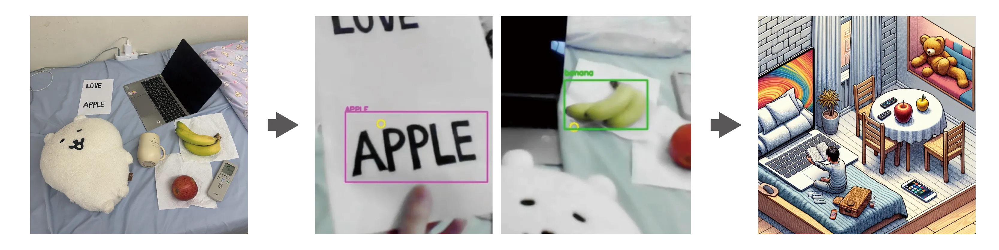

Can human subjective experience be captured, translated, and re-presented through computational systems?
Building upon the Illusory Eyescape series, this work expands interaction beyond controlled exhibition
environments and situates consciousness within real-world contexts.
Unlocking Inner Vision is an interactive system that transforms gaze behavior into generative imagery. By
integrating wearable eye-tracking technology (SOL GLASSES) with real-time object detection and text-to-image AI,
the system translates visual attention into machine-generated representations, rendering subjective consciousness
visible through computational interpretation.
By incorporating a wearable eye-tracking device, the project shifts from static, screen-bound interaction to
embodied exploration. Users are no longer confined to predetermined textual spaces; instead, their consciousness
unfolds dynamically as they navigate the physical world. This transition reframes perception as a mobile and
context-sensitive process, allowing attention itself to become the driving force of creative generation.

Technical Architecture
This study is built upon the wearable eye-tracking device SOL GLASSES, integrating object detection (YOLOv8) and
text recognition (EasyOCR) to achieve real-time perception and recording of users' visual content.
The system operates in four interconnected stages:
- 1. Gaze Detection
The wearer explores their environment while SOL GLASSES continuously captures fixation
data in real time.
- 2. Data Extraction
Fixations that exceed predefined temporal thresholds are registered as "conscious units," representing moments
of sustained visual attention.
- 3. Prompt Construction
Frequently observed objects and recognized textual elements are aggregated and translated
into structured prompts, forming a machine-readable representation of the user's perceptual focus.
- 4. Image Generation
The constructed prompts are transmitted to DALL·E, which synthesizes visual outputs in real time.
Through this process, the system forms a continuous feedback loop from perception → computational translation →
generative visualization, allowing human attention to be reinterpreted as machine-mediated imagery.
Compared to the earlier WebGazer.js prototype, this SOL GLASSES–based implementation significantly enhances
tracking stability, spatial accuracy, and contextual adaptability, enabling more robust real-world interaction and
environmental responsiveness.
Technical Implementation
Gaze →
Detection (Object /
Text) →
Filtering
→
Aggregation
→
Generation
01
Gaze and Scene Alignment
The system aligns gaze data with the scene in real time, ensuring that each gaze point corresponds to the
correct visual moment.
-
Gaze data is streamed using the Ganzin SDK
-
Gaze coordinates (gaze_2d) are directly mapped to the scene image
-
No resolution scaling is applied to preserve spatial accuracy
-
Gaze is matched to the closest frame in time for accurate spatial alignment
-
gaze_data = find_nearest_timestamp_match(ts, gazes).combined
02
Object Detection and Local Text Recognition
The system combines object detection and OCR to extract semantic content from the user's field of view, with
OCR applied to a gaze-centered region to improve performance (grayscale, blur, thresholding).
-
YOLOv8 for object detection
-
EasyOCR for text recognition
-
Applied only around the gaze region to reduce noise and improve relevance.
-
confidence thresholding for both object and text results
-
ocr_results = reader.readtext(roi_preprocessed)
results = yolo(frame, verbose=False)
03
Attention Filtering
Filters noisy and repetitive gaze inputs to extract meaningful attention patterns. Rather than recording
everything, the system selectively stores significant observations.
-
Reject immediate duplicates
-
Suppress recently stored items
-
Short-term memory window using min_gap
-
if item == saved_items[-1]:
return False
if item in saved_items[-min_gap:]:
return False
04
Prompt Construction
Every 30 seconds, the system counts the accumulated objects and words, selects the most frequent items, and
compresses them into a textual prompt.
-
Frequency counting
-
Top-10 selection
-
Converted into a prompt
-
counter = Counter(saved_items)
top_10_items = counter.most_common(10)
prompt = ", ".join(top_10_items)
05
Asynchronous Image Generation
The prompt is sent to a generative model in a background thread to maintain real-time performance.
-
Background worker thread
-
Queue-based image handoff
-
Displayed without interrupting the main loop
-
threading.Thread(target=worker, daemon=True).start()